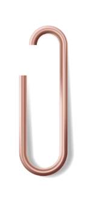
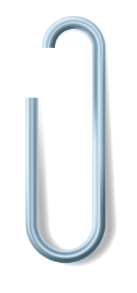

The lab
From AI research to full-stack applications, here's a collection of things I've enjoyed building.

Group ThesisNeural Machine Translation for Chakma-Bangla
My undergraduate thesis: an exploration of low-resource techniques for translating Chakma — an Indigenous language of the Chittagong Hill Tracts with very little parallel data — into Bangla.
- Fine-tuned BanglaT5 using iterative back-translation to make the most of a tiny parallel corpus
- Reached a BLEU score of 19.00 — a 30.4% improvement over baseline
- Matched GPT-4.1's in-context learning performance and outperformed every prior fine-tuned system on this pair

Solo Project — OngoingStudyCat — Full-Stack Web App
A productivity web app built around a focus timer and an animated pixel-pet that studies alongside you. Still in progress — the pixel art above is the companion itself, currently in two coat colors with awake/asleep states.
- Designed the entire UI in Figma before writing any code
- Hand-drew the pixel-pet sprites and their outfit/room customization assets
- Built the focus timer and session-stats tracking in React + Tailwind
- Own the whole pipeline solo: concept → art → code → deployment on Vercel
StudyHive — a Learning Platform
A YouTube-style resource-sharing hub built for students to upload, browse, and revisit course material in one place.
- Led the frontend: dashboard layout, course cards, and navigation
- Integrated the Flask + MySQL backend that powers the resource library
- Designed the browsing experience around recently-viewed and recommended courses
3D Maze Escape Game
A real-time 3D maze game built from scratch — no game engine, just raw graphics programming.
- Built the render loop and maze geometry directly with PyOpenGL, GLUT, and GLU
- Implemented first- and third-person camera modes
- Added simple enemy AI, collision detection, and a countdown-timer win/lose state
eBird Bias Correction (GNN + XGBoost)
Citizen-collected bird sighting data is famously biased: some areas get birdwatched constantly, others almost never. This pipeline models and corrects for that observation bias.
- Built a Graph Neural Network to capture spatial relationships between observation sites
- Layered XGBoost on top for the final bias-corrected prediction
- Owned the full pipeline: preprocessing, modeling, evaluation, and documentation